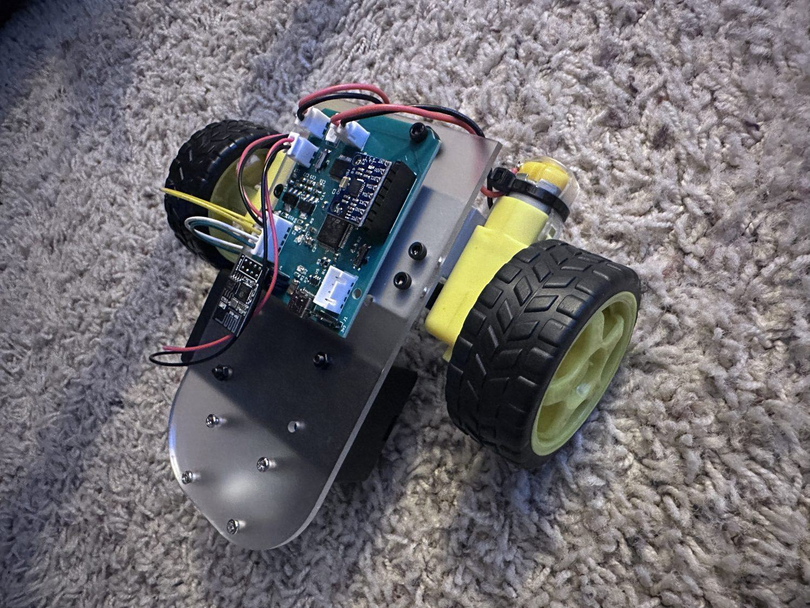
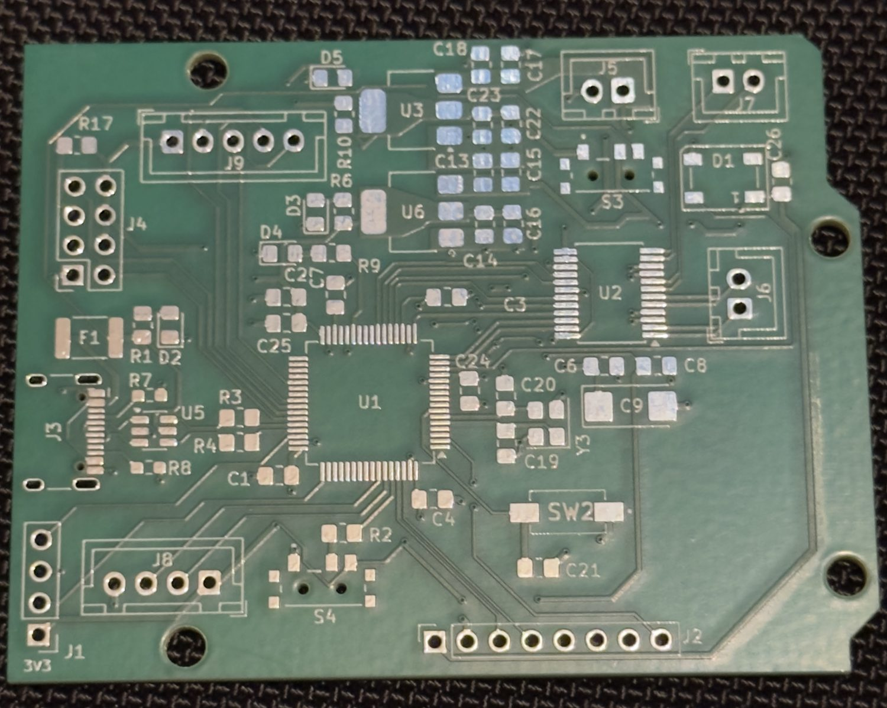
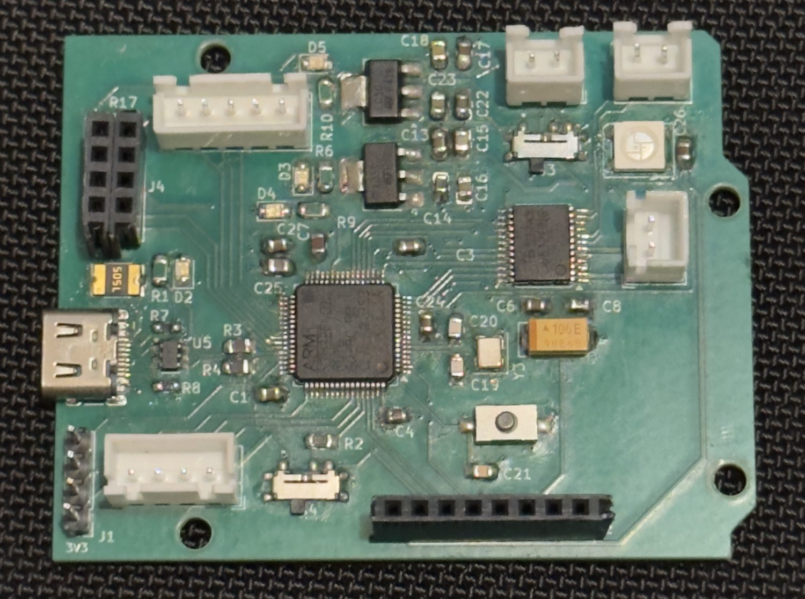
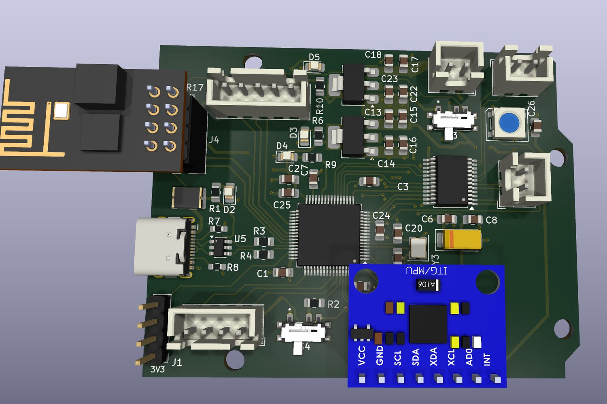
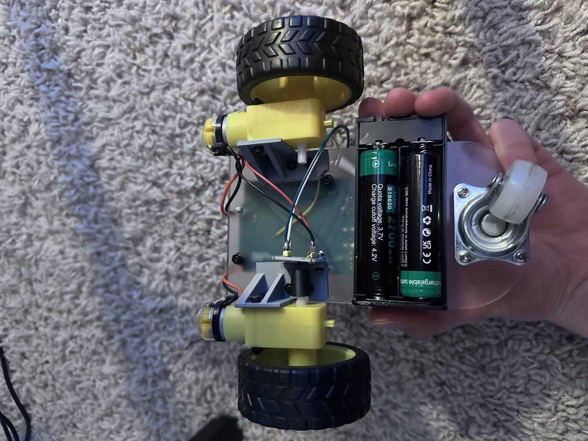
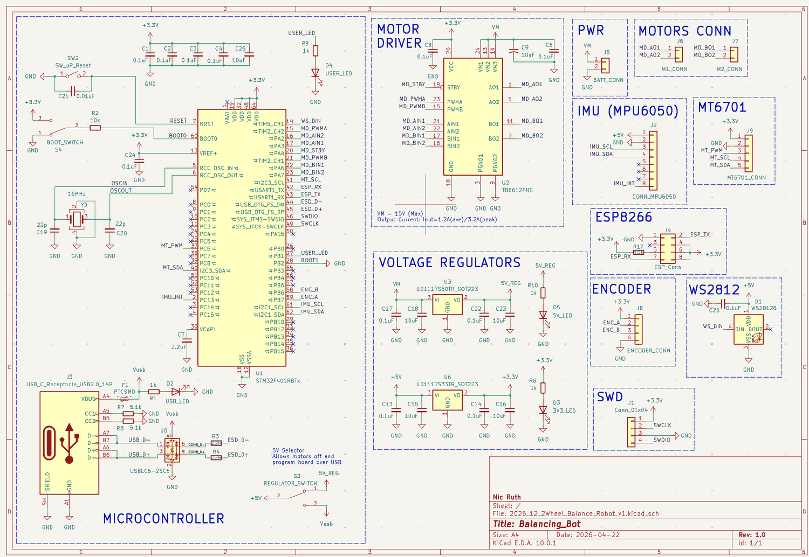
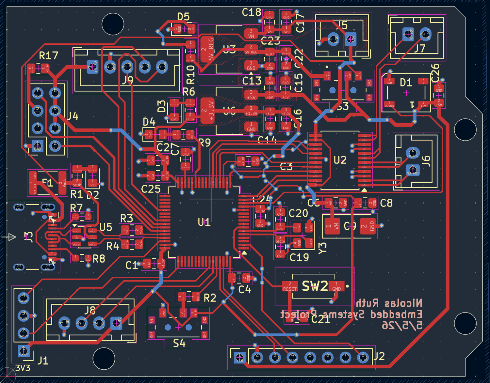

Embedded · PCB · Wireless
3-Wheel Robot

- MCU
- STM32F401RBT6 (ARM Cortex-M4)
- IMU
- MPU6050 3-axis gyro and 3-axis accelerometer, over I²C
- Toolchain
- STM32CubeIDE, HAL drivers, C
- Control
- ESP8266 access point serving its own web page, driven from a phone browser over WebSockets
- Board
- Custom control PCB designed in KiCad
What it is
A three-wheel robot running on a control board I designed, laid out, and hand-soldered. You connect a phone to the robot's own WiFi network, open its address in a browser, and get a control pad for driving forward, backward and turning. Roll and pitch from the IMU show up live on the same page.
I did all of it: the schematic and layout, the assembly, the STM32 firmware, and the control page. It went through several revisions, and I kept each one in the repository instead of overwriting it, so you can see how it got from the first two-wheel board to the current one.
How it's put together
| Module | What it does |
|---|---|
| firmware_main | The first board, a two-wheel version: KiCad files, gerbers, an interactive BOM, a CAD model of the assembly, and build photos. No firmware, despite the folder name. |
| firmware_v2 | KiCad project for a later board revision |
| balance_noEncoder | The STM32 firmware: MPU6050 through a complementary filter, TB6612 motor control, and the UART link to the ESP8266 |
| remote_esp8266 | ESP8266 access point, web server, and the WebSocket control page for the phone |
| pcb | KiCad project for the control board: schematic and layout |
Driving it from a phone
There's no pairing and no app. The ESP8266 runs its own access point, so the robot is its own WiFi network. You join it, open the ESP's address, and it serves the control page itself. Any phone with a browser works, and no internet connection is needed.
Commands go over a WebSocket instead of separate HTTP requests. With one request per button press, every command waits on a round trip and the robot lags behind your input. An open socket sends small JSON messages both ways continuously. The ESP8266 passes each command to the STM32 over UART. The data coming back is also useful for debugging, since I can watch roll and pitch while the robot is moving instead of reading them over a serial cable afterward.
The board
The control board puts everything the robot needs on one PCB, built around an STM32F401RBT6 on a 16 MHz crystal. A TB6612FNG drives the motors. The MPU6050, the MT6701 magnetic encoders, the ESP8266 and the motor leads each plug into their own connector instead of being soldered to the chassis. Power comes in over USB-C through a PTC fuse, CC resistors and a USBLC6 ESD array, then LD1117 regulators make 5 V and 3.3 V rails, each with an indicator LED. A WS2812B gives the firmware one addressable status light, and a 4-pin SWD header keeps the debugger connected.
The switch labeled 5 V selector cuts power to the motors while the logic stays powered from USB. That way I can flash and debug the board on the bench without the robot driving itself off the desk.
Populated by hand
The boards came back bare, and I soldered every surface-mount part by hand: the passives, both regulators, the TB6612, the crystal, and the STM32 in a 64-pin quad flat pack.
I planned the layout around that. Parts are spaced far enough apart for an iron and tweezers instead of packed as tightly as the design rules allow. Anything that takes mechanical stress, like the USB-C port, the JST connectors and the headers, is through-hole, because surface-mount pads can peel off.






Self-balancing (unfinished)
The original goal was a self-balancing robot, an inverted pendulum that stays upright by driving its wheels in the direction it's falling. That's why it has the IMU and encoder inputs. The firmware reads the MPU6050 through a complementary filter at 100 Hz to get roll and pitch, which is the first thing a balance controller needs.
I didn't get as far as a working balance controller, and the encoder code is still switched off, so for now it only drives. The board has what balancing would need: an IMU, encoder inputs and live telemetry.
Building it yourself
The firmware in balance_noEncoder/ is an STM32CubeIDE
project. Open it with File → Open Projects from File System
and build. The board files were saved in KiCad 9 and 10, so open
them in KiCad 10.